Restaurant · rue de Tournai, Stambruges
Le BouquetProvençal
Moules, belles pièces de viande et une très belle carte de vins.
Une table à deux pas de la Mer de Sable de Stambruges, ouverte six jours sur sept, midi et soir, le dimanche et le lundi compris. Des banquettes de velours vert, de grandes fenêtres, et des moules dont on se souvient.
Ouvert six jours sur sept
- Fermé seulement le mardi
- Terrasse
- Accès en fauteuil roulant
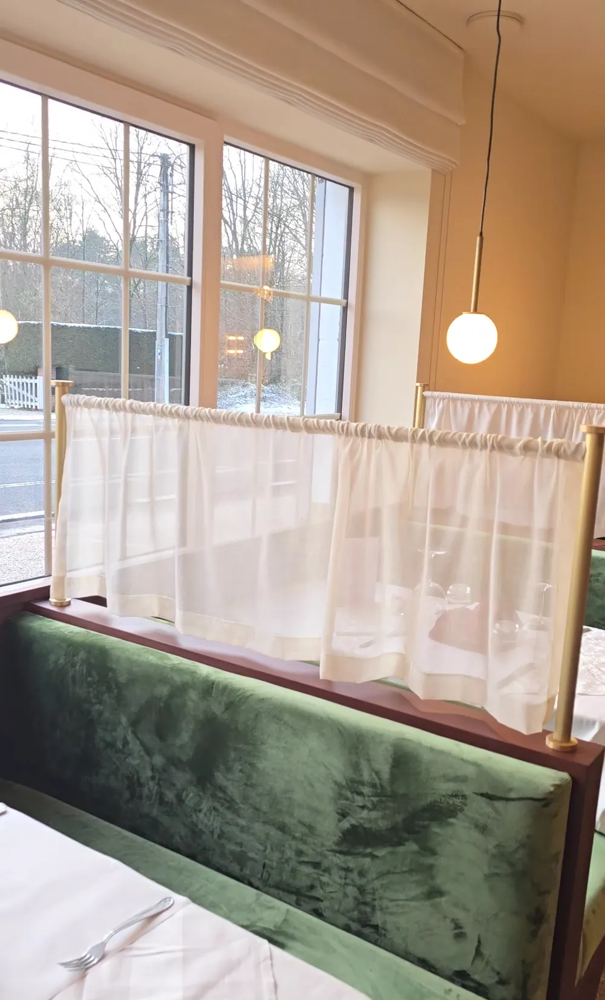
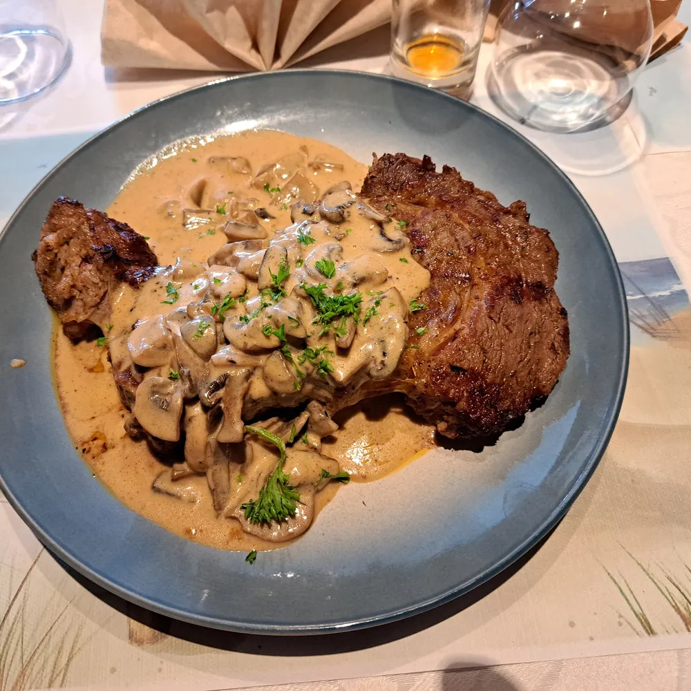
Entrecôte, sauce aux champignons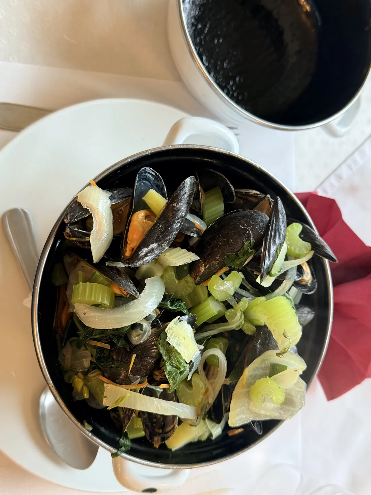
[…] nous avons rarement mangé d’aussi bonnes moules !
Alice B., avis Google
À table
« Rarement mangé d’aussi bonnes moules »
Ce que les clients ont photographié à table : la cocotte de moules, l’entrecôte sous sa sauce aux champignons, la pièce de bœuf et ses frites, et pour finir, une assiette de petits desserts.
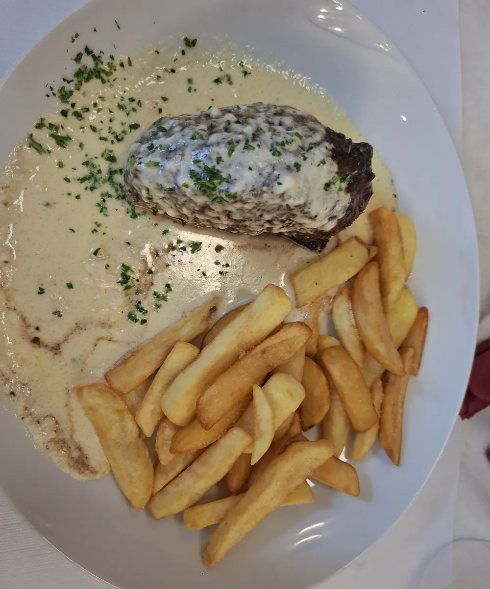
« Belle découverte pour nous ce soir. Excellent service ! »Alice B., avis Google
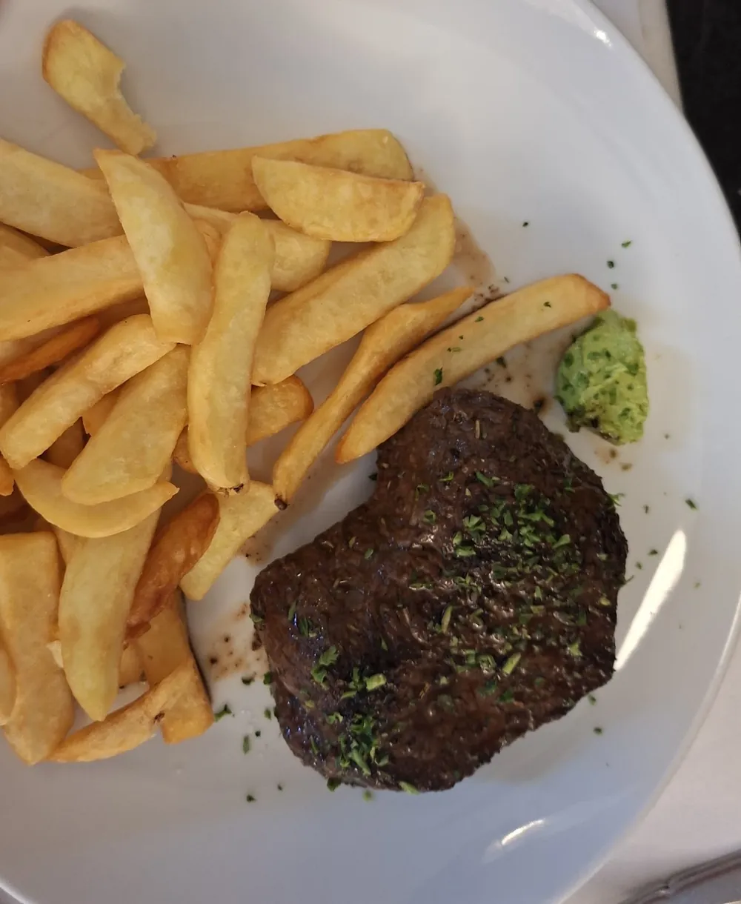
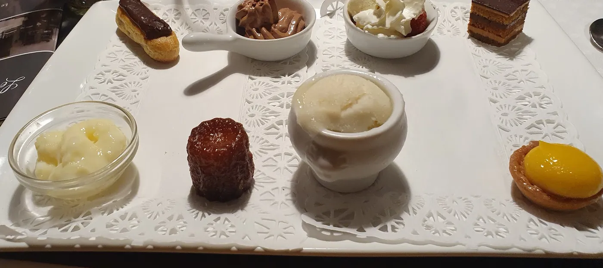
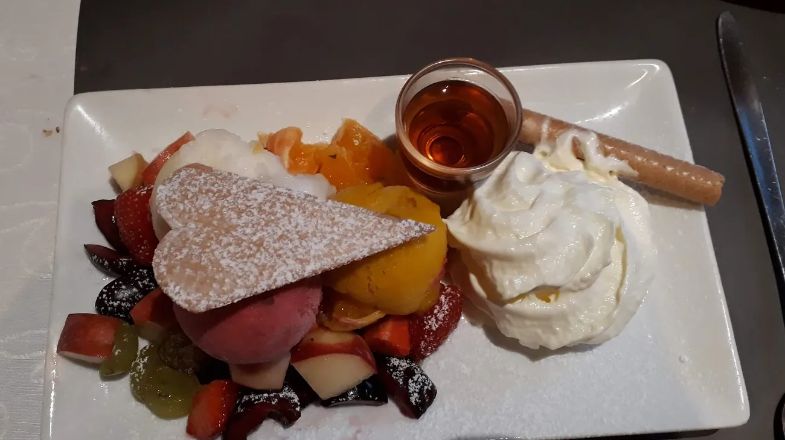
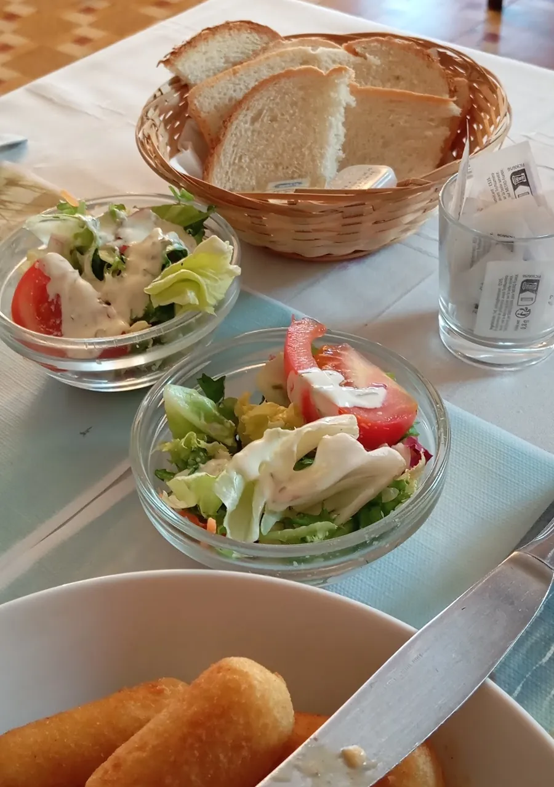
Faites glisser pour voir les plats
Les moules
La spécialité qu’on vient chercher : servies en cocotte, avec céleri et oignons. Une cliente en est repartie conquise, dès sa première visite.
- Moules en cocotte
- Avec céleri et oignons
Les viandes
De belles pièces grillées, servies avec frites, sauce aux champignons, sauce crème ou beurre aux herbes.
- Entrecôte
- Pièce de bœuf
Les poissons
Côté mer, les habitués citent la sole, le cabillaud, le saumon et l’aile de raie.
- Sole
- Cabillaud
- Saumon
- Aile de raie
« Très belle carte de vins »
Alice B., avis Google. La carte et les prix du jour se découvrent sur place ; une question ? Le 069 57 81 17.
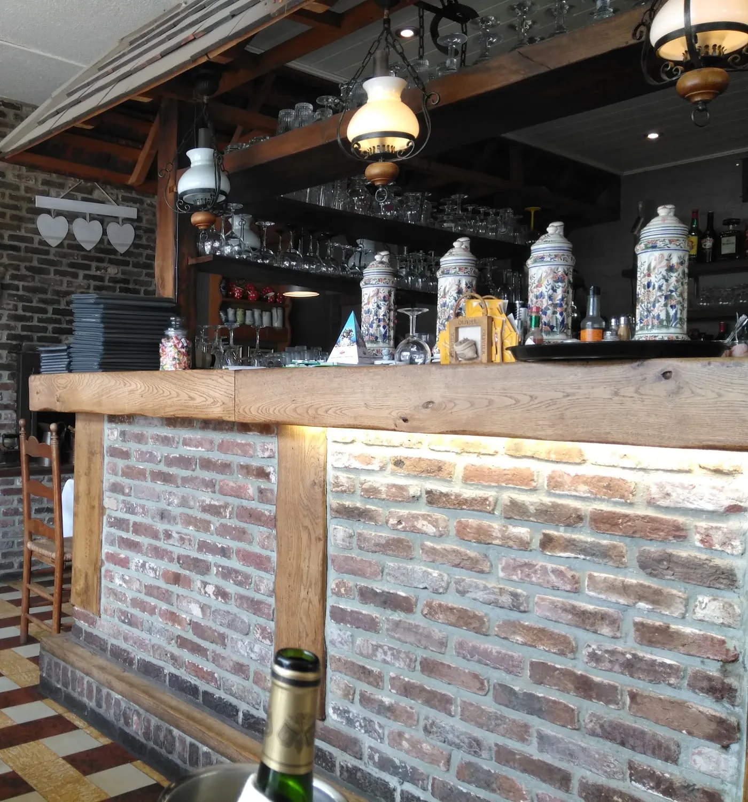
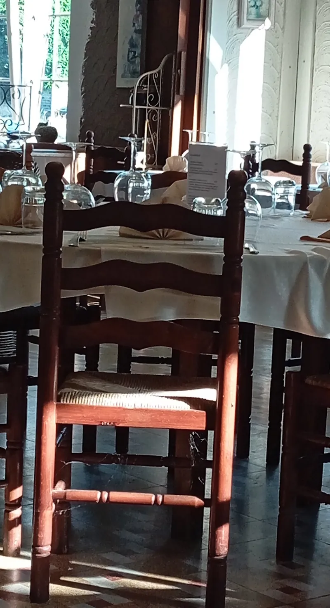
La salle
Velours vert, briques et grandes fenêtres
D’un côté, des banquettes de velours vert, des voilages blancs et de grandes fenêtres. De l’autre, le comptoir en briques sous ses poutres, les lampes à globe, les pots de faïence peints et les chaises paillées sur le carrelage. Nappes blanches partout, et la terrasse dès qu’il fait beau.
Première fois que je m y rend et sincèrement endroit tres agréable et cuisine très bonne. Je recommence et je reviendrais avec plaisir
Ophéline D., avis Google, il y a une semaine
- Terrasse aux beaux jours
- Accès en fauteuil roulant
- Parking facile d’accès
- Plats à emporter
- Bancontact, Visa, Mastercard
- Près de la Mer de Sable
Réserver
Votre table, même le dimanche soir
Ici, la réservation est souhaitée. Choisissez le jour, l’heure et le nombre de couverts : trente secondes, à toute heure, même restaurant fermé, sans attendre au téléphone.
Avis
« Ce resto mérite d’être plus connu »
253 avis sur la fiche Google. Voici ce que deux clientes ont écrit après leur repas, mot pour mot.
Trés bonne adresse. Acceuil sympa, prix raisonable. […]
Laurent D., avis publié sur trouvetonresto.beHoraires et accès
Six jours sur sept, midi et soir
| lundi | 12 h – 15 h · 17 h 30 – 22 h 30 |
|---|---|
| mardi | fermé |
| mercredi | 12 h – 15 h · 17 h 30 – 22 h 30 |
| jeudi | 12 h – 15 h · 17 h 30 – 22 h 30 |
| vendredi | 12 h – 15 h · 17 h 30 – 22 h 30 |
| samedi | 12 h – 15 h · 17 h 30 – 22 h 30 |
| dimanche | 12 h – 15 h · 17 h 30 – 22 h 30 |
Rue de Tournai 337
7973 Stambruges (Belœil)
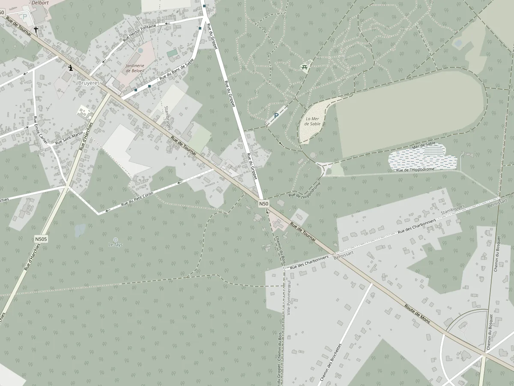
Itinéraire © OpenStreetMapUne balade avant le repas
La Mer de Sable de Stambruges est à quelques minutes à pied : une promenade dans le bois, puis la table.
Sur la rue de Tournai
Au bord de la N50, à Stambruges, avec un parking facile d’accès.